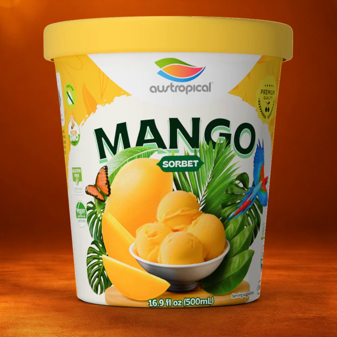
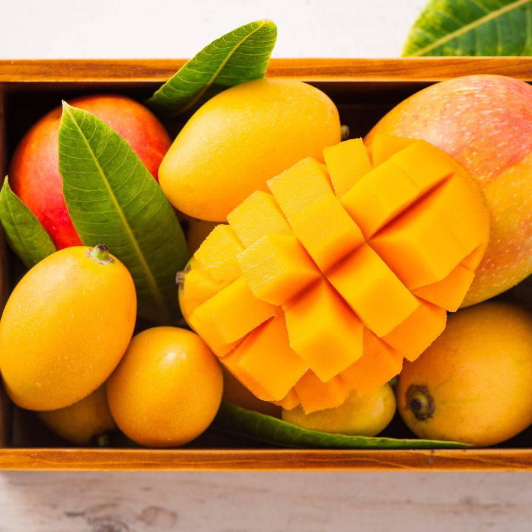
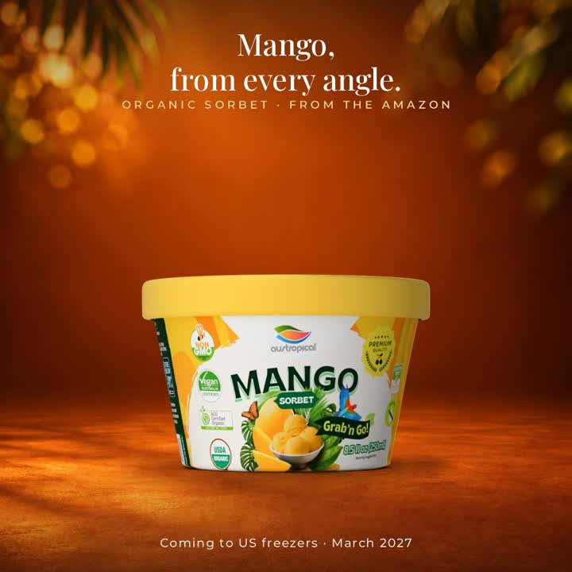

Organic mango sorbet · 60% mango
Organic Mango
Organic Mango is a mango sorbet: 60% organic mango, filtered water and organic cane sugar, made in the Brazilian Amazon. It is USDA certified organic, certified vegan (Vegan Australia) and kosher (Kosher Australia). Eat it as it is, or use it in smoothies, shakes and desserts. Mango is on the first container, with Original Sensation.
- USDA Organic
- Certified vegan (Vegan Australia)
- Kosher (Kosher Australia)
Up close
Turn it. Zoom in. Read the label.
Drag the pint to turn it, then pinch or double-click to zoom in on the label from any side. The cup and the 10.2 kg bucket are one tap away.



What's in it
60% organic mango
Organic mango is 60% of the recipe and the first ingredient on the label, followed by filtered water and organic cane sugar.
Organic mango sorbet with 60% mango, made in the Brazilian Amazon
Formats
- 500 mL pint (16.9 fl oz). Paper tub, foil seal, paper lid. Twelve to a case.
- 250 mL Grab'n Go cup, wooden spoon included. One serving. Eighteen to a case.
- 10.2 kg foodservice bucket. About 69 servings at a 2/3 cup (147 g) scoop. Set up at Vistar, item TLL65271. The bowl program.
Certifications
- USDA Organic NOP ID 3950001101
- Certified vegan (Vegan Australia)
- Kosher (Kosher Australia)
Made in the Brazilian Amazon, in an FSSC 22000 certified facility. Pasteurized. Product of Brazil.
Ingredients
Organic Mango (60%), Filtered Water, Organic Cane Sugar, Stabilizers (Citrus Fiber, Guar Gum, Locust Bean Gum).
No allergen statement is printed or required for this product.
Nutrition Facts, per 2/3 cup (147 g)
| Calories | 150 |
|---|---|
| Total Fat | 0 g |
| Saturated Fat | 0 g |
| Sodium | 5 mg |
| Total Carbohydrate | 35 g |
| Dietary Fiber | 1 g |
| Total Sugars | 30 g |
| Added Sugars | 20 g |
| Protein | less than 1 g |
Declared per 2/3 cup (147 g) serving; about 69 servings per 10.2 kg bucket.
Storage
Keep frozen at 0 °F (−18 °C) or below. Do not let the product thaw and refreeze: temperature changes affect texture and shelf life. Keep the container tightly sealed and store it in the coldest part of the freezer, away from the door. The best-before date is on the container.
Shelf life: 24 months from manufacture, sealed and stored frozen.
Grab'n Go
The 250 mL Grab'n Go cup
One serving with a wooden spoon under the lid, for grab-and-go coolers, campus c-stores and micro-markets. Same sorbet as the pint.
Grab'n Go for foodservice
Buyers and distributors
Pint, Grab'n Go cup and 10.2 kg bucket. Bucket item TLL65271 at Vistar. Live in GDSN.
Trade information